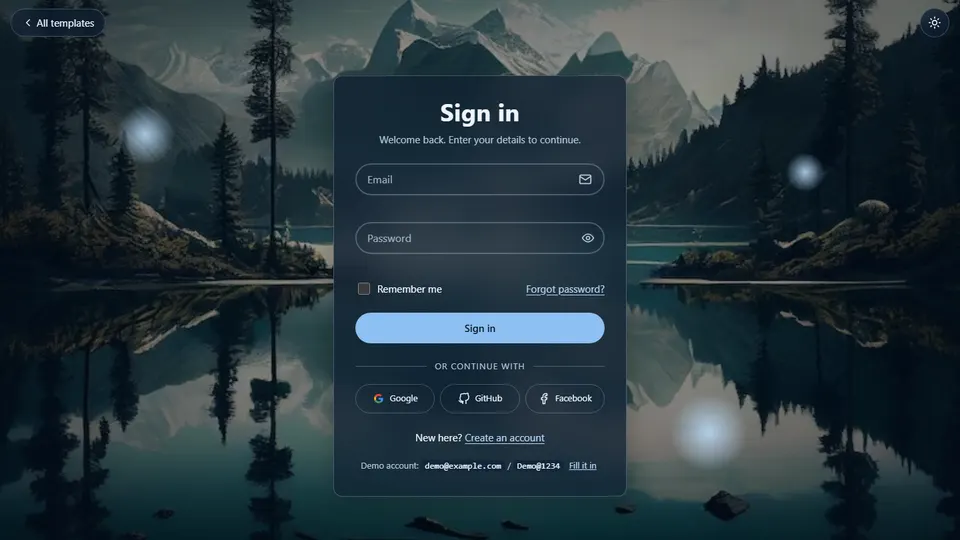
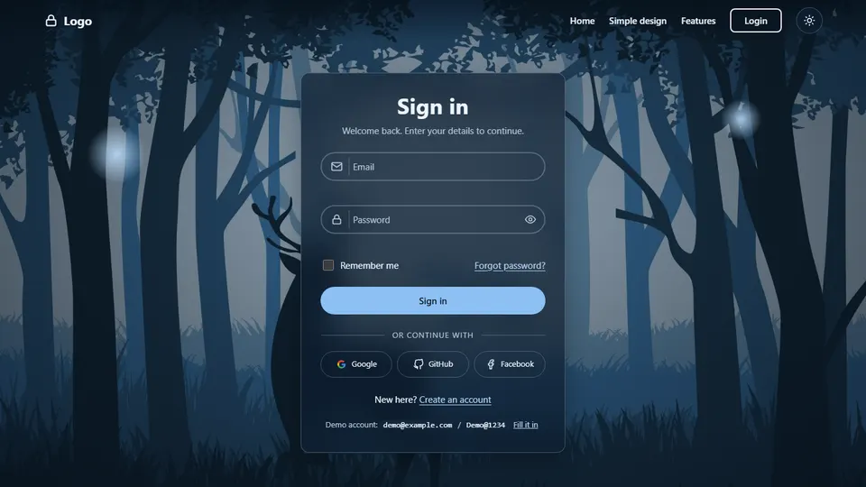

Simple login
A centred frosted-glass card over a full-screen forest scene. Icons sit inside the fields on the right.
Open designOpen-source style starters
Pick a design. Both include sign in, register with a password strength meter, forgot password, show / hide password, remember me and light and dark themes.

A centred frosted-glass card over a full-screen forest scene. Icons sit inside the fields on the right.
Open design
A transparent navigation bar, floating labels with left icons and a features section that scrolls in.
Open designUse demo@example.com with Demo@1234, or register a new account. Accounts live only in this browser.